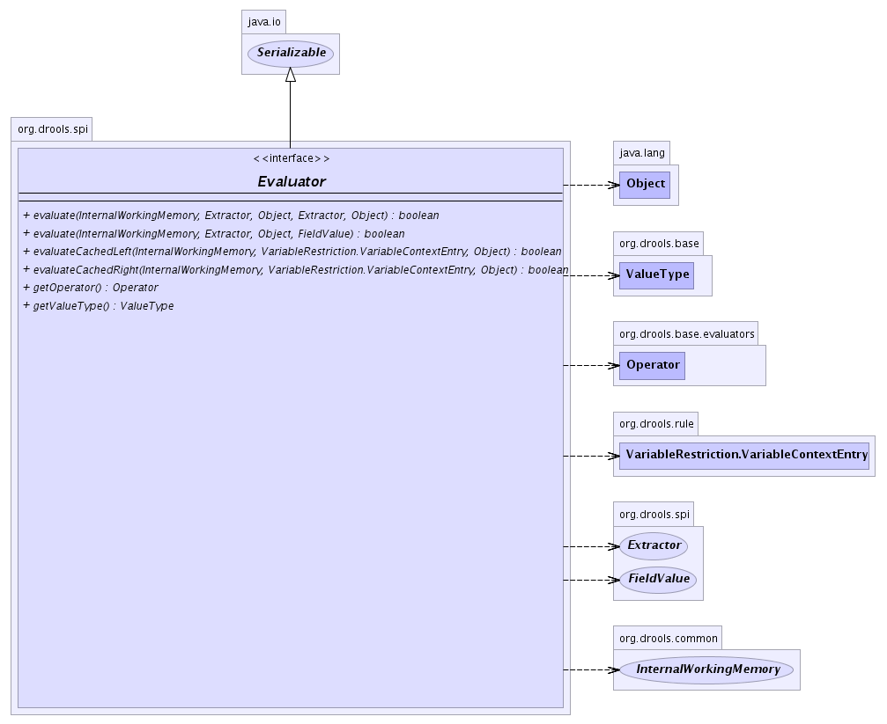

org.drools.spi
Interface Evaluator
- All Superinterfaces:
- java.io.Serializable
- All Known Implementing Classes:
- BaseEvaluator, BaseMemberOfEvaluator, BaseNotMemberOfEvaluator
public interface Evaluator
- extends java.io.Serializable
-
- 
|
Method Summary |
boolean |
evaluate(InternalWorkingMemory workingMemory,
Extractor leftExtractor,
java.lang.Object left,
Extractor rightExtractor,
java.lang.Object right)
|
boolean |
evaluate(InternalWorkingMemory workingMemory,
Extractor extractor,
java.lang.Object object1,
FieldValue value)
This method will extract the value from the object1 using the
extractor and compare it with the object2. |
boolean |
evaluateCachedLeft(InternalWorkingMemory workingMemory,
VariableRestriction.VariableContextEntry context,
java.lang.Object object1)
|
boolean |
evaluateCachedRight(InternalWorkingMemory workingMemory,
VariableRestriction.VariableContextEntry context,
java.lang.Object object2)
|
Operator |
getOperator()
|
ValueType |
getValueType()
|
getValueType
ValueType getValueType()
getOperator
Operator getOperator()
evaluate
boolean evaluate(InternalWorkingMemory workingMemory,
Extractor extractor,
java.lang.Object object1,
FieldValue value)
- This method will extract the value from the object1 using the
extractor and compare it with the object2.
- Parameters:
workingMemory - TODOextractor - The extractor used to get the source value from the objectobject1 - The source object to evaluateobject2 - The actual value to compare to
- Returns:
- Returns true if evaluation is successfull. false otherwise.
evaluate
boolean evaluate(InternalWorkingMemory workingMemory,
Extractor leftExtractor,
java.lang.Object left,
Extractor rightExtractor,
java.lang.Object right)
evaluateCachedLeft
boolean evaluateCachedLeft(InternalWorkingMemory workingMemory,
VariableRestriction.VariableContextEntry context,
java.lang.Object object1)
evaluateCachedRight
boolean evaluateCachedRight(InternalWorkingMemory workingMemory,
VariableRestriction.VariableContextEntry context,
java.lang.Object object2)